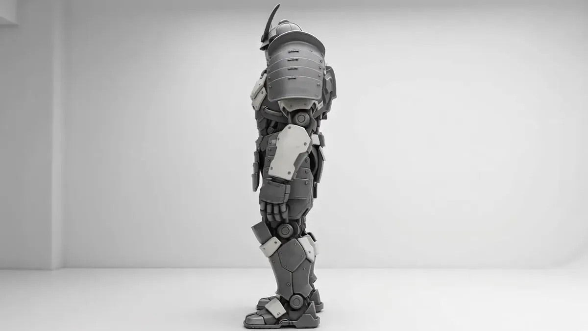
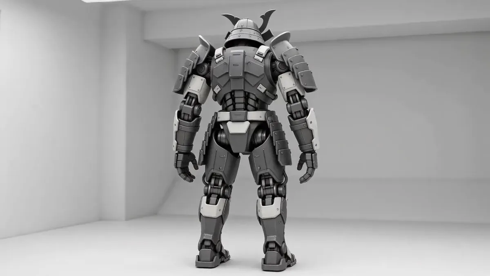

A machine you can actually keep running
-
Plate, not skin
The armour is eleven sections on captive fasteners, all reachable with a 19 mm socket from standing height. A damaged plate is a forty-minute swap on the apron, not a recovery job and a week in a shop.
-
One pilot, direct linkage
A single seat with mechanical linkage to the primary joints, so the unit keeps walking with its computers dark. No crew to coordinate, and no drive-by-wire failure that ends the patrol.
-
Built for streets
Nine metres tall and 2.4 m across the shoulders: it clears a standard carriageway and turns inside a four-way junction. Geared for held ground between buildings, not for open country.

Systems
-
Frame
A load-bearing internal skeleton carries the mass; the plate carries only itself. Losing a panel costs protection and nothing else, which is why the unit walks home from damage that would strand a monocoque.
-
Articulation
Hydraulic actuators at knee and elbow, mounted deliberately outside the armour line. A technician inspects and swaps them without a lift and without pulling plate.
-
Power
Nine hours at patrol load from a hot-swap cell behind the left shoulder guard. Two cells and a spare rotate a unit through a 24-hour posting with no return to base.
Field record
We stopped planning around recovery vehicles. The unit walks home.Sera Okonkwo — Fleet maintenance lead, Ninth District
- 40minutes, plate swap
- 9hours at patrol load
- 11hand-removable sections
Specify a unit for your district
Configuration, basing and service intervals are quoted per deployment.

Specification
- Class
- Samurai, armoured combat exoskeleton
- Standing height
- 9.1 m
- Shoulder width
- 2.4 m
- Dry mass
- 14,200 kg
- Crew
- 1, direct mechanical linkage
- Endurance
- 9 h at patrol load, hot-swap cell
- Armour
- Sectional plate, 11 hand-removable pieces
- Actuation
- Hydraulic, knee and elbow, outside the armour line
Register interest
Tell us the district, the basing, and what you are currently running. Engineering answers directly.